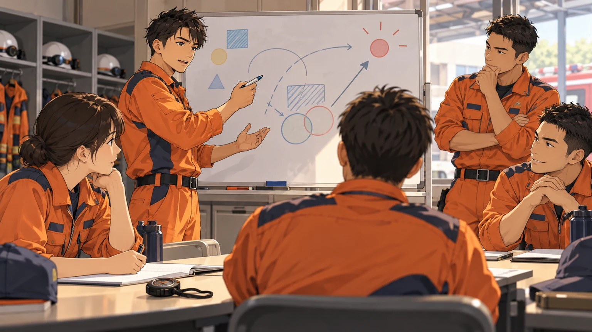

その訓練、何ができれば合格か
所要時間に加えて、判断・連携・確認の過程を見直す。

導入は架空の訓練場面です。本連載は、所属の活動要領・安全管理要領に沿って日々の訓練を振り返るための読み物です。
終わった。それで達成か
「前回より早かった」。訓練を終えた隊に、そんな声が上がる。時間の短縮は一つの成果だ。では、今回身につけたかったことは何だったのか。問い直すと「一連の流れを覚える」「役割の連携を見る」など、答えが分かれた。架空の場面だが、同じ訓練に参加していても、見ている目標は違うことがある。
目標を、観察できる言葉にする
「連携を高める」だけでは、何を見れば達成を判断できるかが曖昧だ。例えば「役割の変更が必要になったとき、担当者が報告し、隊内で変更を共有できる」とすれば、観察する場面が具体的になる。一度の訓練で全てを確かめようとせず、その日に重点を置く項目を絞る。必要な安全管理を守ったうえで、学ぶ対象をはっきりさせたい。
結果と過程を分けて見る
想定を完了できたことと、途中の判断が適切だったことは、分けて振り返りたい。完了していても、指示が届かなかった場面や確認の抜けがあったかもしれない。一方で、途中で立ち止まったからこそ問題を見つけられた場合もある。所要時間だけで優劣を決めず、「何を把握し、何を根拠に選んだか」を本人に尋ねると、外から見えない判断を検討できる。
評価する人の見方もそろえる
訓練を見る側も、評価する項目を事前に共有する。「もっとしっかり」「動きが悪い」という感想では、改善する行動が見えにくい。いつ、誰が、何をしたかを記録し、その行動が目標とどう関係するかを整理する。良かった点も同じように具体化する。できなかったことの指摘だけで終えず、次も続けたい行動を残したい。
次の訓練で試すこと
開始前に「今日は何ができれば達成か」を一文で書き、隊で共有する。終了後は、その一文に戻って実際の場面を挙げる。達成できなかった場合も、必要だった知識、準備、練習を分けて考え、次回の目標を一つ決める。訓練の回数を増やすだけでなく、一回ごとの学びを次に接続する。その積み重ねを、隊として確かめていきたい。